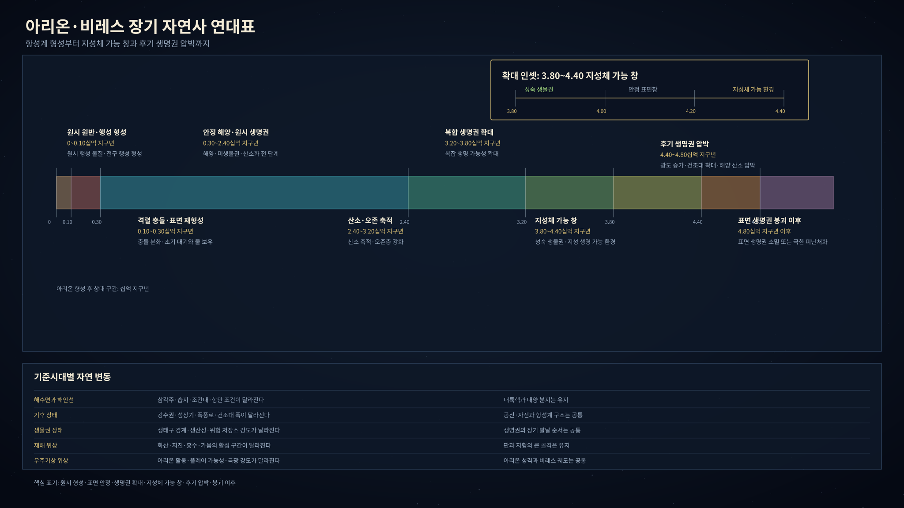

레오니아
왕실 직할지와 기사 봉토가 겹친 중앙집권 왕국. 추천장, 문장 반지, 납품 장부가 길을 열고 닫는다.
- 들어갈 문
- 궁정 납품, 기사단 회랑, 왕실 법정
- 조심할 것
- 예법 위반, 봉인문서 훼손, 납기 지연

공용서력 5083년, 비레스
비레스의 하루는 성문 앞 줄, 항만세 장부, 신전 종소리, 장터의 흥정, 산길 초소의 질문으로 시작된다. 왕국과 도시국가, 피난민 정착지와 봉쇄된 학술권, 바닷길과 고개길은 서로 맞물리지만 누구도 세계의 모든 진실을 알지 못한다.
이 안내서는 숨겨진 객관 진실을 모두 풀어놓는 백과가 아니다. 챗봇 유저가 비레스에 들어갔을 때 실제로 마주칠 표면을 보여준다. 먼 옛 전쟁의 원인은 지방마다 다르게 말해지고, 같은 사건도 관청 장부와 항해자 노래와 신전 설교에서 서로 다른 얼굴을 가진다.
권역을 고르는 첫 장
비레스의 사람들은 행성 전체를 하나의 지도로 보지 않는다. 누군가는 영지 장터와 공동 창고를 세계의 중심으로 알고, 누군가는 항만 장부와 등대의 불빛을 따라 움직인다. 산악 수도원, 북방 고개, 남방 강하 교역권, 숲 경계는 각자 다른 생활 규칙을 만든다.

20개 국가와 권역
아래 카드는 플레이어가 처음 잡을 수 있는 생활 표면이다. 세부 객관정보는 내부 DB에 남기고, 여기서는 들어가자마자 체감되는 권위, 생업, 위험, 소문을 보여준다.
왕실 직할지와 기사 봉토가 겹친 중앙집권 왕국. 추천장, 문장 반지, 납품 장부가 길을 열고 닫는다.
군항과 철강 부두가 권력의 표면인 해군 팽창 왕국. 배 한 척의 징발이 마을 몇 곳의 겨울을 바꾼다.
농경 영지와 숲 경계, 서부 접경 성문, 피난민 정착지가 맞물린 군주국. 그린할로우 상실과 뉴할로우 재정착이 현재의 상처다.
기록원과 극장, 후원 계약으로 움직이는 학예 공화 도시국가. 말 한 줄이 명예와 후원금을 동시에 만든다.
방벽과 병영, 무기고, 검문소가 도시의 뼈대인 요새 도시국가. 외부자는 먼저 목적과 보증인을 설명해야 한다.
곡물, 종자, 공동 창고, 하구 물길이 권위가 되는 농업·강하 교역권. 배급표가 신분보다 더 큰 힘을 가질 때가 있다.
석공과 금속 납품, 장인 명예가 국가의 얼굴이 되는 공방권. 납품 품질은 기술 문제가 아니라 가문의 기억이다.
자유항, 선장 보증, 해도와 보험으로 움직이는 항만권. 먼 바다의 진실은 노래보다 장부에 오래 남는다.
북방 고개와 겨울 저장고를 붙잡은 혹한 통행권. 문이 닫히면 돈보다 식량과 숙박권이 먼저 계산된다.
계절 야영과 초지 이동로가 중요한 유목·폐쇄분지권. 정착지보다 우물과 동행료가 더 오래 기억된다.
감찰과 봉쇄 학술권이 겹친 기록 도시권. 허가받은 사본과 금지된 주석 사이에 많은 진실이 묻힌다.
숲과 성림, 목재권과 오래된 기억이 맞물리는 권역. 길은 있지만 모두에게 열린 길은 아니다.
산악 관측과 수도원 길이 이어진 고지권. 달과 계절을 읽는 표는 학문이자 세금과 의례의 근거다.
가축과 물권, 동행료가 화폐보다 강한 초지 권역. 누구와 함께 이동하느냐가 신분증보다 중요하다.
하구와 습지, 수문 마을이 생활을 나누는 저지권. 물길이 바뀌면 세금과 재판도 함께 흔들린다.
남방 강하 교역과 상단이 움직이는 물자 흐름의 권역. 계약은 말보다 봉인 끈과 증인의 이름에 오래 남는다.
외곽 산지와 약초, 돌봄과 피난 표식이 엮인 생활권. 치료는 지식이지만, 누구에게 먼저 약을 줄지는 정치가 된다.
인간 정착권 바깥의 숲 기억과 경계 관습이 강한 권역. 교역은 가능하지만, 말이 곧 허락은 아니다.
고산과 폐쇄 지식, 위험한 등반로가 겹친 상징 권역. 많은 이야기가 있지만 확인된 기록은 적다.
북방 혹한과 금기, 사라진 길의 이야기가 남은 주변권. 지도에 있어도 길이 열려 있다는 뜻은 아니다.
어떤 사람으로 들어갈까
낯선 사람은 이름보다 먼저 어디서 왔는지, 누구의 보증을 받는지, 무엇을 들고 왔는지를 묻는다. 방랑 기사, 항만 서기, 상단 짐꾼, 약초꾼, 필사 보조, 피난민, 길잡이, 장인 견습은 각자 다른 문을 연다.

기록과 소문의 세계
그린할로우가 왜 무너졌는지, 어느 장부가 뉴할로우의 첫 배급을 기록했는지, 어떤 전쟁이 지금의 항만세를 만들었는지는 모두가 같은 방식으로 알지 않는다. 관청은 연도와 책임을 남기고, 신전은 교훈을 남기고, 항해자는 노래를 남기며, 마을 사람은 자기 가족이 겪은 날씨와 굶주림을 기억한다.
자료 사진과 도식
아래 자료는 플레이어용 분위기 안내와 세계관 이해를 위한 시각 자료다. 정확한 수치와 내부 검산은 별도 정본에 남긴다.